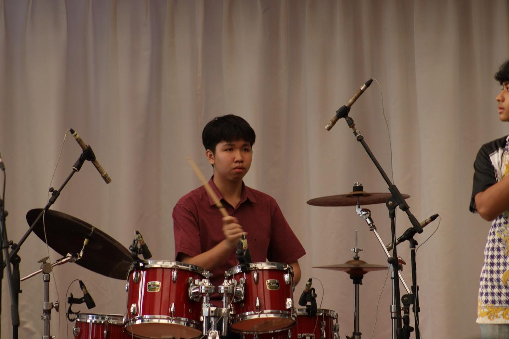

Halo, Saya Jeremy Winata Suhendra

Latar Belakang:
Saya adalah siswa kelas 11 di SMA Kolese Kanisius. Di luar jam sekolah, saya sangat menikmati bermain alat musik, terutama drum dan bass, serta berpartisipasi dalam olahraga seperti tenis meja dan basket.
Prestasi dan Komunitas:
Dalam perjalanan saya, saya telah meraih beberapa pencapaian, termasuk:
- Juara 2 Lomba Band Arcofest 2023.
- Juara 1 Lomba Band PL Fair 2023.
- Peraih Medali Emas di bidang Statistika dalam OSSN 2024.
- Legionnaire II Kolese Kanisius.
- Product Manager di CaniEngineering 2024.
Saya percaya bahwa setiap pengalaman dan pencapaian membawa saya lebih dekat pada tujuan untuk terus berkembang dan memberikan kontribusi positif, baik di bidang seni, olahraga, maupun akademik.